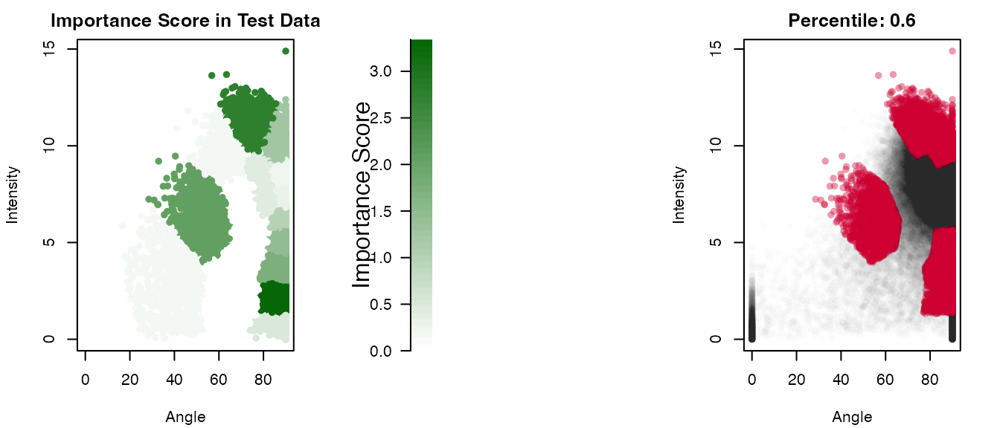
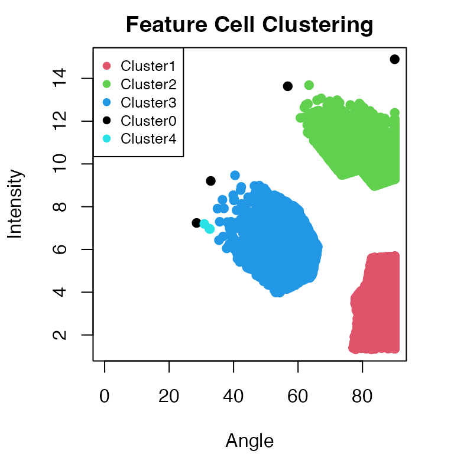
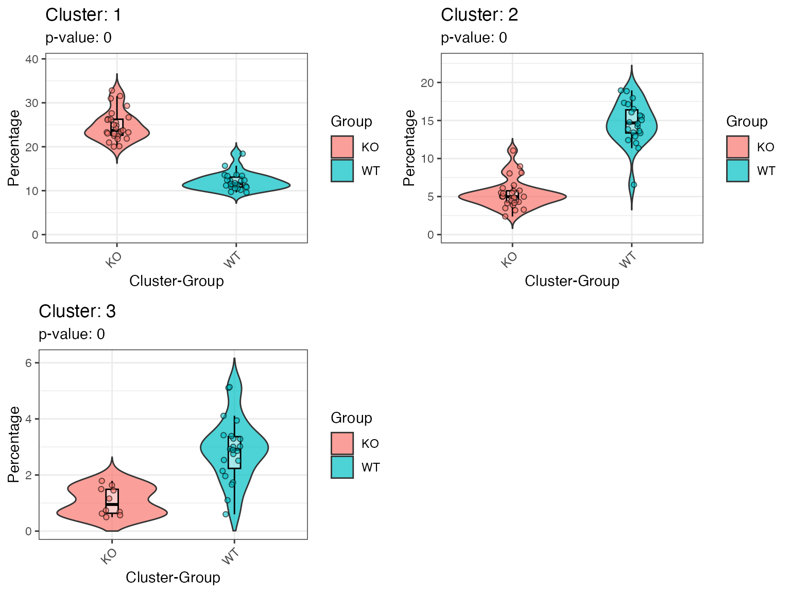
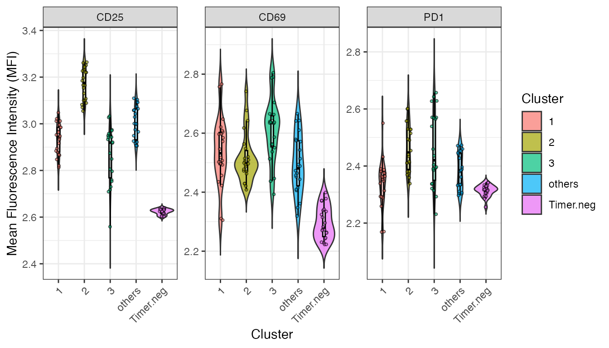

Getting Started with TockyRandomForest Analysis
Dr Masahiro Ono
2025-02-20
Source:vignettes/TockyRandomForestAnalysis.Rmd
TockyRandomForestAnalysis.Rmd
Introduction to Fluorescent Timer and the Tocky System
Fluorescent Timer proteins change their emission spectra over time, serving as powerful tools for monitoring transcriptional dynamics in vivo. Our recent efforts have successfully implemented data preprocessing methods in the TockyPrep package (Ono (2024b)). Additionally, to analyze Timer fluorescence dynamics and apply quantitative and statistical analysis methods, we have developed the TockyLocus package (Ono (2024a)). However, analyzing complex Timer profiles, as typically seen in flow cytometric data from Foxp3-Tocky mice, remains challenging.
Aim
To overcome these challenges, applying machine learning methods is an attractive approach. The package suite, TockyMachineLearning, provides comprehensive methods for identifying feature cells that represent group-specific features in Timer profiles.
Specifically, the current TockyRandomForest package offers Random Forest methods developed for analyzing flow cytometric Fluorescent Timer data.
Relationship to the Packages TockyPrep and TockyLocus
The TockyPrep package is designed to facilitate data preprocessing for flow cytometric Fluorescent Timer data. Subsequently, the TockyLocus package leverages this preprocessed data to apply data categorization methods, enabling quantitative analysis of Timer Angle data (Bending et al. (2018)). However, this approach is applicable to one-dimensional data only.
The TockyRandomForest package utilizes the special
object class TockyPrepData provided by the
TockyPrep package to perform machine learning
analysis
Install TockyRandomForest
To begin using TockyRandomForest, you need to install both the TockyRandomForest and TockyPrep packages from GitHub:
# Install TockyPrep and TockyRandomForest from GitHub
devtools::install_github("MonoTockyLab/TockyPrep")
devtools::install_github("MonoTockyLab/TockyRandomForest")Sample Workflow
Identifying CNS2-dependent Foxp3 transcriptional dynamics
This section guides you through a typical analysis workflow using
TockyRandomForest to process flow cytometric data of
cells expressing Fluorescent Timer proteins. To facilitate the analysis,
preprocessed data are provided, and the TockyPrep
package offers methods to analyze data using its S4 object class
TockyPrepData.
First, load the necessary packages.
library(TockyPrep)
library(TockyRandomForest)
library(gridExtra)Load example TockyPrepData objects included in the
TockyRandomForest package as follows:
# Example data load
# Define the base path
file_path <- system.file("extdata", package = "TockyRandomForest")
filenames <- list.files(path = file_path, pattern = 'CNS2.rda')
files <- file.path(file_path, filenames)
for(i in files){load(i)}The dataset was generated by analyzing T-cells from Foxp3-Tocky mice (WT) and CRISPR-mediated Foxp3-Tocky mutants, specifically CNS2KO Foxp3-Tocky mice (KO). Here we aim to identify CNS2-dependent Foxp3 transcription dynamics in the Timer space in a data-oriented manner.
TockyKmeansRF Analysis for Feature Cell Identification
We will use the TockyKmeansRF function to perform
TockyRandomForest learning on train_x and testing on
test_y. Note that these two datasets are independent of
each other.
show(train_x)## TockyPrepData Object:
## Total cell number: 1804517
## Variables: file, Angle, Intensity, FSC.A, CD25, PD1
## Total sample number: 34
## Groups: KO, WT
show(test_y)## TockyPrepData Object:
## Total cell number: 1974400
## Variables: file, Angle, Intensity, FSC.A, CD44, CD25
## Total sample number: 49
## Groups: KO, WTThe TockyKmeansRF function performs both a model
training using a training dataset and a model testing using an
independent test dataset.
result_rf <- TockyKmeansRF(train_x, test_y, num_cluster = 18)## Train Data:
##
## Call:
## randomForest(formula = group ~ ., data = cluster_train_data_wide, ntree = ntree)
## Type of random forest: classification
## Number of trees: 100
## No. of variables tried at each split: 4
##
## OOB estimate of error rate: 0%
## Confusion matrix:
## KO WT class.error
## KO 20 0 0
## WT 0 14 0
## Test Data:
## test_predictions
## KO WT
## KO 27 0
## WT 1 21
## [1] "Accuracy: 0.979591836734694"Clustering Feature Cells
plotImportanceScores(result_rf, percentile = 0.6)
Next, use the output object result from
TockyRandomForestAnalysis to cluster feature cells.
result_rf = ClusteringFeatureCells(result_rf, percentile = 0.6, eps = 2, minPts = 3)
The function ClusteringFeatureCells utilises the DBScan
algorithm. The parameters eps and minPts may
need to be adjusted to optimise the clustering results.
Use violinPlotFeatureCells to analyse group-specific
effects as captured by the TockyKmeansRF model.
p = violinPlotFeatureCells(result_rf, ncol = 2)## Warning: Removed 122 rows containing missing values or values outside the scale range
## (`geom_violin()`).
plot(p)Marker Expression Analysis
Lestly, analyse the marker expression of identified clusters.
p2 <- violinClusterMFIPlot(test_y, result_rf, min_cells = 10, group = 'WT')